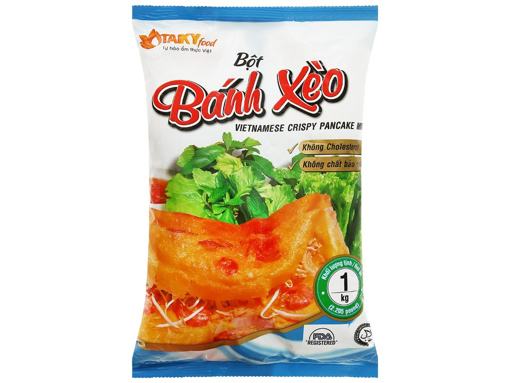
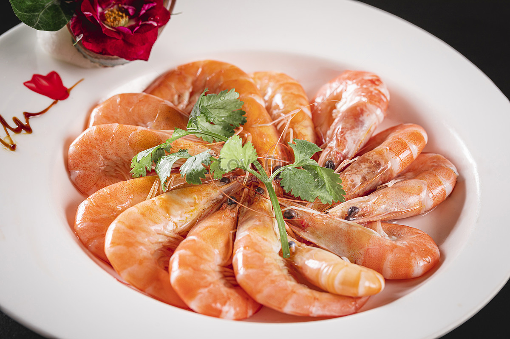
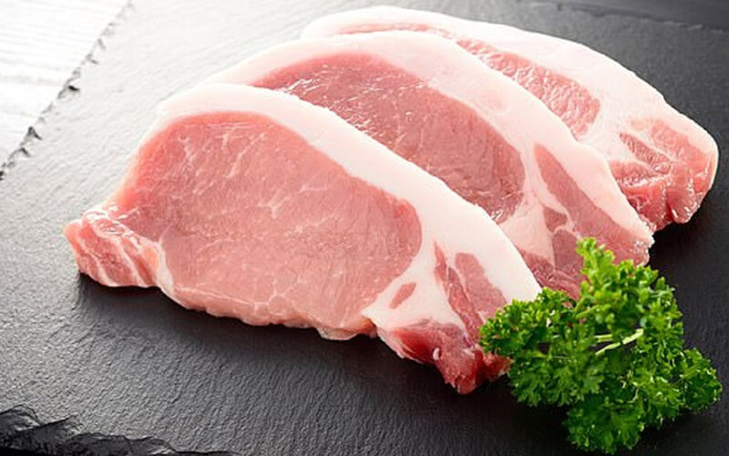
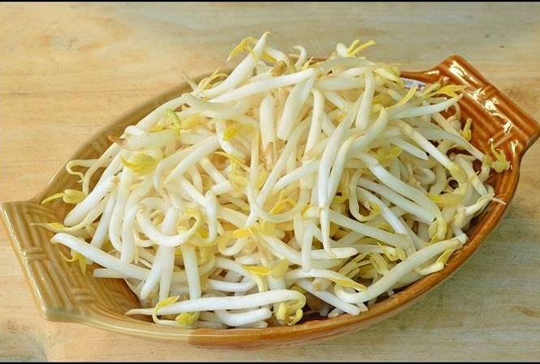
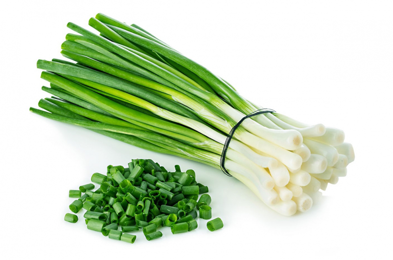
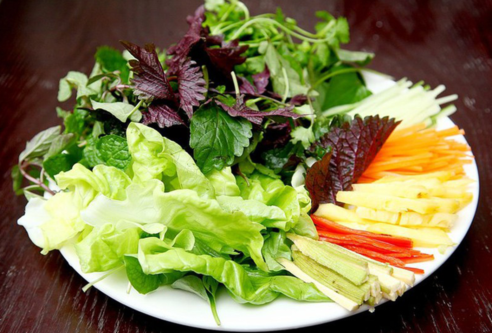
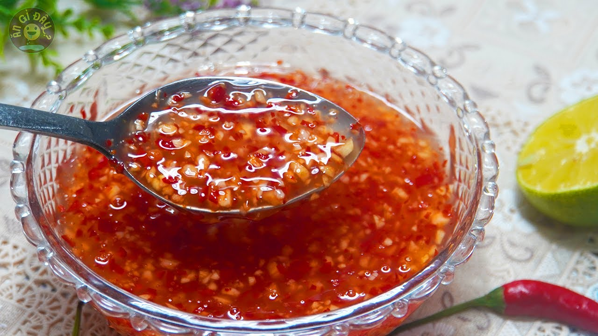

Nguyên Liệu

Bột bánh xèo
200g

Tôm
150g

Thịt heo
150g

Giá đỗ
100g

Hành lá
2 cây

Rau sống
200g

Nước mắm
50ml
Cách Chế Biến
- Trộn bột bánh xèo với nước, thêm một ít muối và gia vị, khuấy đều để tạo thành hỗn hợp bột mịn.
- Ướp tôm và thịt heo với một chút muối và tiêu, sau đó xào sơ qua với hành lá và gia vị cho thơm.
- Đun nóng chảo với một chút dầu, đổ hỗn hợp bột vào chảo và xoay để bột trải đều.
- Thêm tôm, thịt heo và giá đỗ lên mặt bột, đậy nắp lại và nấu cho đến khi bánh chín và vàng đều.
- Gắp bánh ra đĩa, cắt thành miếng vừa ăn và dùng kèm với rau sống và nước mắm pha.
- Chuẩn bị nước mắm pha với chanh, tỏi, ớt và đường để làm nước chấm.